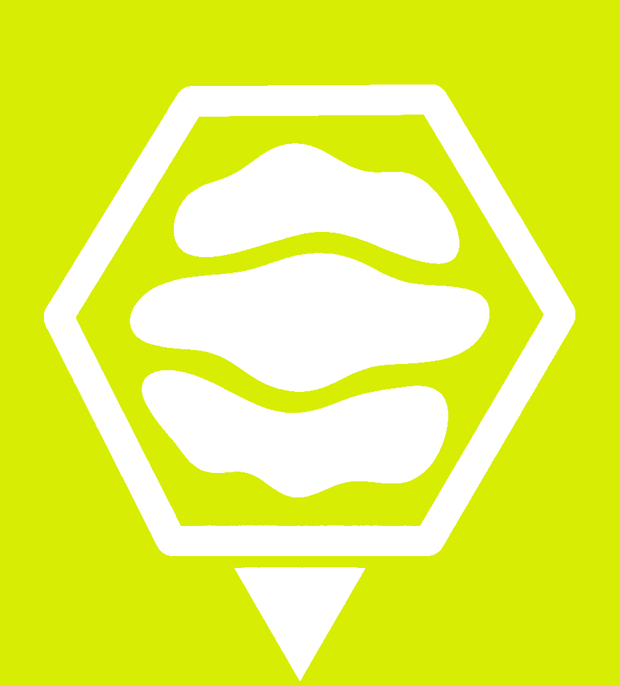

1. Visión General
Hiven es el agente de ingeniería de software autónomo multi-agente de coste \$0 del ecosistema Terra. Funciona transformando los runners efímeros de GitHub Actions en un laboratorio de desarrollo neuronal coordinado.

Introduce tu GitHub Personal Access Token (PAT) para acceder a la consola. Se almacena localmente y permite despachar Kōmbees a coste $0.
Monitoreo en tiempo real del pipeline de 4 fases y ciclo de auto-sanación (Self-Healing).
Configura y lanza un enjambre multi-agente con personalización total.
Registro histórico de tareas resueltas y Pull Requests gestionadas por Hiven.
| Swarm ID | Repositorio | Estado | Misión | Auto-Sanación | Fecha | Pull Request |
|---|---|---|---|---|---|---|
| No hay misiones recientes. Despacha una en la pestaña "Despachar Misión". | ||||||
Gestión de memoria local aislada y sincronización con la Mente Colmena Global de Terra.
Memoria privada de tu sesión y repositorio. Puedes purgar celdas completas o eliminar patrones específicos.
Configura y verifica la escucha de menciones @hiven en Issues de GitHub.
Permite que cualquier desarrollador invoque a Hiven en un Issue o Pull Request simplemente escribiendo un comentario con @hiven o /hiven.
https://hiven-komb-queen.vercel.app/webhooks/github
Manual completo, funcionamiento de las 4 fases, Honeycombs y preguntas frecuentes.
Hiven es el agente de ingeniería de software autónomo multi-agente de coste \$0 del ecosistema Terra. Funciona transformando los runners efímeros de GitHub Actions en un laboratorio de desarrollo neuronal coordinado.
El enjambre ejecuta un proceso estricto y determinista:
Si la Fase 3 detecta que los tests fallan, Hiven extrae el stack trace de error y lo reinyecta automáticamente en un sub-enjambre de corrección (hasta 3-5 intentos) hasta que la suite de pruebas concluya con éxito.
La memoria colectiva opera en dos capas:
No. Opera 100% sobre minutos gratuitos de GitHub Actions, almacenamiento en repositorios Git y GitHub Pages.
Se almacena en tu propio repositorio privado .hiven-storage y en la memoria local de sesión.